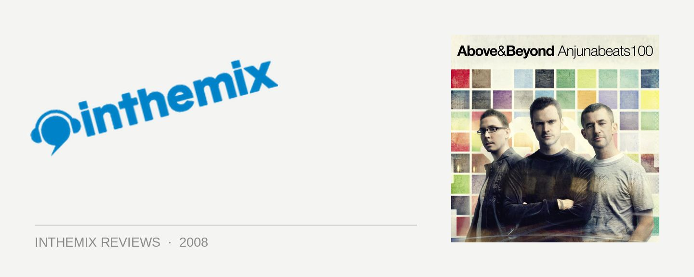

Various Artists - Anjunabeats 100, mixed by Above & Beyond
I’ve never really been a fan of anthems and classics CDs – and this is particularly true when we’re talking about trance anthem and classics CDs. You know the type: released by Gatecrasher and Godskitchen by the bucketful, they’re jampacked full of cheesy vocal edits, soulless computer mixing and the sort of played out tunes that we’ve heard in clubs way too many times anyway. The only format that ever convinced me otherwise was when Armin van Buuren decided to whip out his copy of Ableton and mash a whopping 80 tracks together over two hours for his magnificent A State of Trance Yearmix series; otherwise, it’s all garbage as far as I’m concerned. And Anjunabeats 100 contains no such innovate approach; glancing over the tracklisting, I’ve hear every last one of these tracks before. So what could it possibly have to offer? Well, I definitely spoke too soon because as soon as I inserted into the CD player Above & Beyond’s tribute to their century of releases on the mighty Anjunabeats label, it was impossible to hold onto my disdain of ‘anthems and classics’ releases any longer. Because I was too busy throwing my hands in the air.
It’s impossible to convey just how much bliss, emotion and euphoria are tied up in all these classic tracks, and mark my words – if you weren’t sure of the impact that the Anjunabeats label have had on both the trance genre and dance as a whole, then listening to Anjunabeats 100 will make you understand. From the melodic rush of tunes like Sunny Lax’s Puma and Alt+F4’s self-titled stormer, to the melancholic big-room chords of Above & Beyond’s own Surrender, across to the deeper progressive grooves of Bart Claessen’s dominating remix of Signalrunner’s Aria Epica; all of the greatest moments are here across two discs and 31 tracks. You wouldn’t think they’d work all that well slung together on a double mix CD, but like me, you’ll be forced to eat your words when you get swept up in it all.
As they take the courtesy of pointing out in the liner notes (via an introduction from DJ Magazine scribe Tim Stark), although it sometimes may feel like it, Anjunabeats weren’t responsible for inventing the melodic/trance genre. But it’s worth reflecting on the fact that before Above & Beyond and crew came along, the exhilaration of the late 90s had fizzled out and euphoric trance was frankly, getting pretty damn boring. And generic. And uninspiring. But the prodigious trio of Jono Grant, Tony McGuinness and Paavo Siljamaki succeeded in injecting a big dose of sophistication and innovation back into the genre, with a strong nod towards progressive house that saw them (and their roster of artists) always pushing the rich, lush and textured production just a little bit further on each successive release. While trance is often accused of being formulaic, there’s plenty of innovation of display here. But it’s not even necessary for me to throw sycophantic fanboy praise in their direction: the quality of the productions on Anjunabeats 100 speak for themselves.
Something extra thrown in to sweeten the deal is the From Goa to Rio DVD, which chronicles Above & Beyond realising their longheld dream of returning to Goa (a place the group names as the spiritual home of the record label) to play a gig on the actual Anjuna Beach; before flying over to Rio only a couple days later to play a record-breaking New Years Eve gig to an estimated one million people. It’s a music documentary of sorts, but this ain’t no Shine a Light or Better Living Through Circuitry. Although Tony McGuinness in particular might hold a few delusions towards it, Above & Beyond aren’t rockstars and they don’t really have the necessary charisma to make the group interviews particularly engaging. But for die hard Anjunabeats fans, it’s still essential viewing. There’s some fantastic party footage in there and even better, Canberra’s own production maestro Jaytech even makes an appearance. Keep an eye out for his debut album on Anjunabeats later this year…
All up, Anjunabeats 100 makes for a perfect momento of the melodic, euphoric and progressive trance sound that we’ve been getting loved up to from the Anjunabeats label over the past eight years. While it’s entirely possible you’ve heard every last one of them all already, it doesn’t change the fact that every last track is a bonafide classic. The free From Goa to Rio DVD only sweetens the deal, and it’s a must for any trance fan. Keep it coming boys, we can’t wait for the next 100 releases from Anjubnabeats.
Check out the tracklisting ,and keep your fingers crossed for Above & Beyond’s return to Australia later this year…
Disc 1
Cara Dillon vs 2 Devine – Black Is The Colour
Super8 & Tab – Helsinki Scorchin’
Above & Beyond – No One On Earth
Boom Jinx feat. Key – Eternal Reminiscence
Tranquility Base – Razorfish
Alt + F4 – Alt + F4
OceanLab – Beautiful Together
Sunny Lax – P.U.M.A.
Rush & Murray – Epic
Daniel Kandi – Child
P.O.S. – Summer Sun
Nitrous Oxide – North Pole
Aalto – Rush
OceanLab – Satellite
Super8 – Alba
Above & Beyond – Alone Tonight
Disc 2
Anjunabeats – Volume One
David West feat. Andreas Hermansson – Larry Mountains 54
Above & Beyond vs Andy Moor – Air For Life
Aalto – 5
Maor Levi – Reflect
Signalrunners – Aria Epica
Luminary – Amsterdam
Endre – Kallocain
OceanLab – Clear Blue Water
Smith & Pledger – Believe
Nitromethane – Time To Die
Above & Beyond pres. Tranquilty Base – Surrender
OceanLab – Sky Falls Down
Jono Grant vs Mike Koglin – Circuits
Matt Hardwick vs Smith & Pledger – Day One